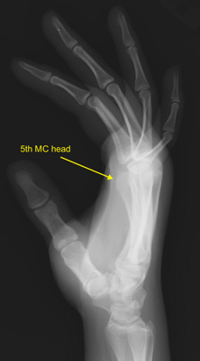

Imaging
Radiographs
- PA, oblique and lateral views of the hand are standard examinations
 Normal PA hand
Normal PA hand
 Normal oblique hand
Normal oblique hand

Normal lateral hand
- Thumb series: true AP, oblique, lateral
- Robert view: true AP taken with hand in IR, dorsum of the thumb on the plate
- Finger series: PA, oblique and lateral
- Lateral demonstrates avulsion fractures
- MC fractures may be better visualized with lateral and off-lateral views
- 5th MC base best visualized with 30° pronated view